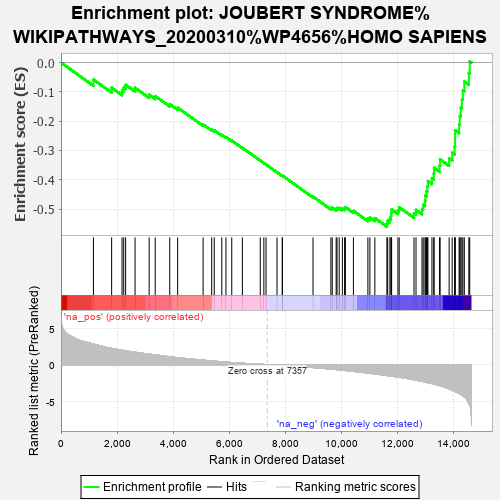

| | | Dataset | ASXL1_gsea_list |
| Phenotype | NoPhenotypeAvailable |
| Upregulated in class | na_neg |
| GeneSet | JOUBERT SYNDROME%WIKIPATHWAYS_20200310%WP4656%HOMO SAPIENS |
| Enrichment Score (ES) | -0.5604193 |
| Normalized Enrichment Score (NES) | -2.1394398 |
| Nominal p-value | 0.0 |
| FDR q-value | 0.004311197 |
| FWER p-Value | 0.023 |
Table: GSEA Results Summary

Fig 1: Enrichment plot: JOUBERT SYNDROME%WIKIPATHWAYS_20200310%WP4656%HOMO SAPIENS
Profile of the Running ES Score & Positions of GeneSet Members on the Rank Ordered List
| PROBE | GENE SYMBOL | GENE_TITLE | RANK IN GENE LIST | RANK METRIC SCORE | RUNNING ES | CORE ENRICHMENT | | 1 | PARP1 | | | 1158 | 2.819 | -0.0581 | No |
| 2 | PDE6G | | | 1808 | 2.213 | -0.0858 | No |
| 3 | FLNA | | | 2179 | 1.969 | -0.0963 | No |
| 4 | NEK8 | | | 2239 | 1.933 | -0.0857 | No |
| 5 | B9D1 | | | 2307 | 1.895 | -0.0760 | No |
| 6 | DVL1 | | | 2644 | 1.699 | -0.0862 | No |
| 7 | ATF4 | | | 3147 | 1.427 | -0.1098 | No |
| 8 | OFD1 | | | 3363 | 1.326 | -0.1145 | No |
| 9 | RAD50 | | | 3882 | 1.073 | -0.1419 | No |
| 10 | RAB3IP | | | 4164 | 0.944 | -0.1541 | No |
| 11 | RHOA | | | 5073 | 0.613 | -0.2117 | No |
| 12 | CSPP1 | | | 5380 | 0.504 | -0.2289 | No |
| 13 | RHEB | | | 5470 | 0.473 | -0.2314 | No |
| 14 | BBS9 | | | 5740 | 0.385 | -0.2469 | No |
| 15 | MYO6 | | | 5888 | 0.343 | -0.2544 | No |
| 16 | ARL2 | | | 6096 | 0.282 | -0.2665 | No |
| 17 | PDE6B | | | 6475 | 0.184 | -0.2910 | No |
| 18 | ANKS6 | | | 7113 | 0.043 | -0.3343 | No |
| 19 | MTOR | | | 7242 | 0.020 | -0.3430 | No |
| 20 | PDE6D | | | 7320 | 0.007 | -0.3482 | No |
| 21 | CEP104 | | | 7711 | -0.069 | -0.3744 | No |
| 22 | RAB8A | | | 7901 | -0.105 | -0.3866 | No |
| 23 | MYO5A | | | 7902 | -0.106 | -0.3858 | No |
| 24 | TMEM138 | | | 8997 | -0.401 | -0.4578 | No |
| 25 | CEP120 | | | 9635 | -0.609 | -0.4968 | No |
| 26 | RP2 | | | 9683 | -0.624 | -0.4953 | No |
| 27 | MKS1 | | | 9823 | -0.677 | -0.4997 | No |
| 28 | TMEM17 | | | 9853 | -0.686 | -0.4966 | No |
| 29 | SHH | | | 9931 | -0.717 | -0.4964 | No |
| 30 | BBS1 | | | 10045 | -0.758 | -0.4984 | No |
| 31 | TMEM216 | | | 10124 | -0.794 | -0.4978 | No |
| 32 | INPP5E | | | 10152 | -0.808 | -0.4935 | No |
| 33 | BBS7 | | | 10439 | -0.920 | -0.5062 | No |
| 34 | DVL3 | | | 10956 | -1.156 | -0.5328 | No |
| 35 | KAT5 | | | 11027 | -1.188 | -0.5286 | No |
| 36 | BBS2 | | | 11204 | -1.279 | -0.5310 | No |
| 37 | BBS4 | | | 11634 | -1.490 | -0.5491 | Yes |
| 38 | UNC119 | | | 11664 | -1.508 | -0.5397 | Yes |
| 39 | TTC8 | | | 11742 | -1.548 | -0.5333 | Yes |
| 40 | ATM | | | 11781 | -1.570 | -0.5240 | Yes |
| 41 | TCTN3 | | | 11790 | -1.575 | -0.5127 | Yes |
| 42 | CC2D2A | | | 11803 | -1.583 | -0.5015 | Yes |
| 43 | CEP164 | | | 12028 | -1.712 | -0.5039 | Yes |
| 44 | CETN2 | | | 12073 | -1.736 | -0.4938 | Yes |
| 45 | PCNT | | | 12601 | -2.085 | -0.5142 | Yes |
| 46 | INVS | | | 12674 | -2.136 | -0.5030 | Yes |
| 47 | AHI1 | | | 12888 | -2.297 | -0.5002 | Yes |
| 48 | ARL13B | | | 12930 | -2.328 | -0.4854 | Yes |
| 49 | TMEM237 | | | 12997 | -2.383 | -0.4719 | Yes |
| 50 | TMEM67 | | | 13005 | -2.391 | -0.4543 | Yes |
| 51 | NPHP1 | | | 13050 | -2.434 | -0.4389 | Yes |
| 52 | B9D2 | | | 13080 | -2.460 | -0.4223 | Yes |
| 53 | KIAA0586 | | | 13099 | -2.475 | -0.4048 | Yes |
| 54 | RPGRIP1L | | | 13243 | -2.601 | -0.3949 | Yes |
| 55 | PIBF1 | | | 13309 | -2.668 | -0.3792 | Yes |
| 56 | NPHP3 | | | 13318 | -2.674 | -0.3595 | Yes |
| 57 | ARMC9 | | | 13514 | -2.870 | -0.3512 | Yes |
| 58 | ZNF423 | | | 13534 | -2.896 | -0.3306 | Yes |
| 59 | SUFU | | | 13856 | -3.326 | -0.3274 | Yes |
| 60 | PCM1 | | | 13964 | -3.512 | -0.3082 | Yes |
| 61 | CEP97 | | | 14053 | -3.681 | -0.2864 | Yes |
| 62 | BBS5 | | | 14070 | -3.707 | -0.2595 | Yes |
| 63 | NPHP4 | | | 14072 | -3.707 | -0.2315 | Yes |
| 64 | TCTN2 | | | 14212 | -3.949 | -0.2112 | Yes |
| 65 | CEP290 | | | 14237 | -3.999 | -0.1826 | Yes |
| 66 | TMEM231 | | | 14273 | -4.100 | -0.1540 | Yes |
| 67 | CCP110 | | | 14314 | -4.169 | -0.1252 | Yes |
| 68 | ARL3 | | | 14347 | -4.265 | -0.0951 | Yes |
| 69 | TCTN1 | | | 14398 | -4.425 | -0.0651 | Yes |
| 70 | CEP41 | | | 14560 | -5.338 | -0.0357 | Yes |
| 71 | NIN | | | 14591 | -5.565 | 0.0043 | Yes |
Table: GSEA details [plain text format]
Fig 2: JOUBERT SYNDROME%WIKIPATHWAYS_20200310%WP4656%HOMO SAPIENS: Random ES distribution
Gene set null distribution of ES for JOUBERT SYNDROME%WIKIPATHWAYS_20200310%WP4656%HOMO SAPIENS